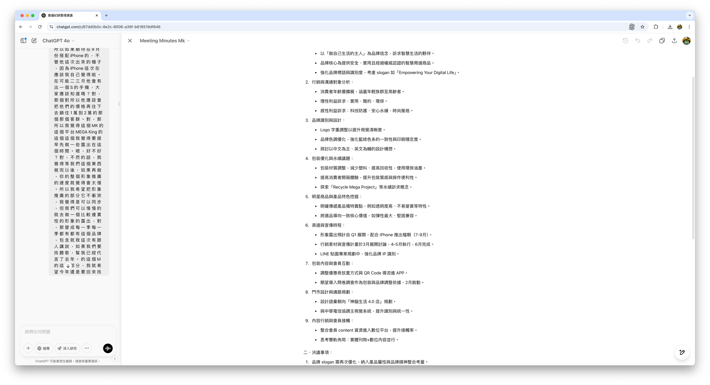
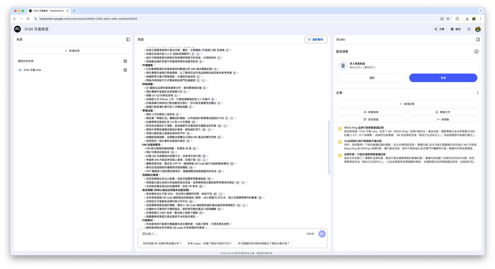
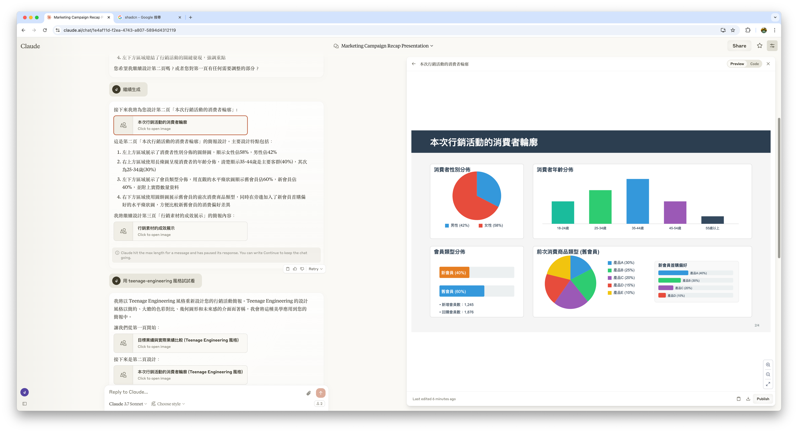
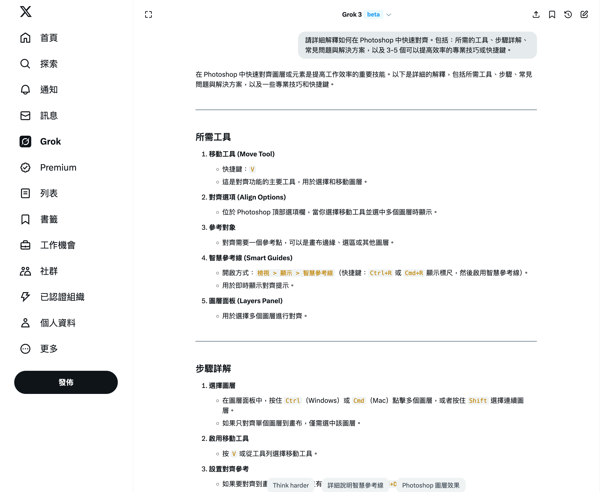
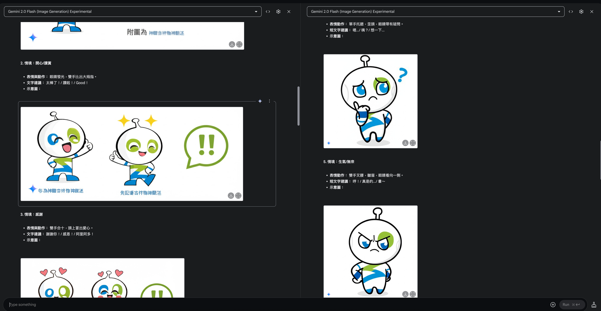
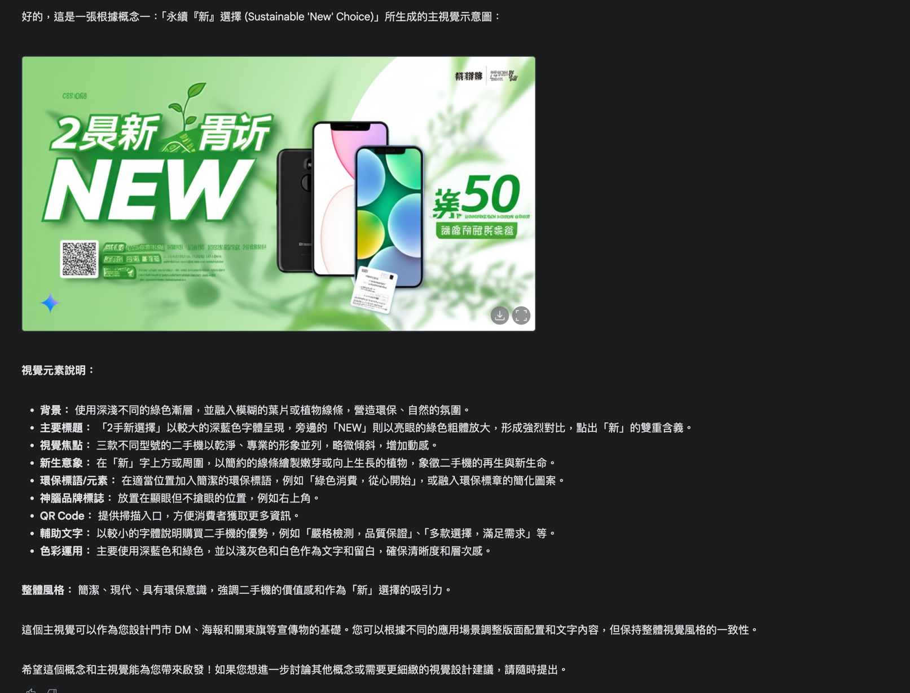
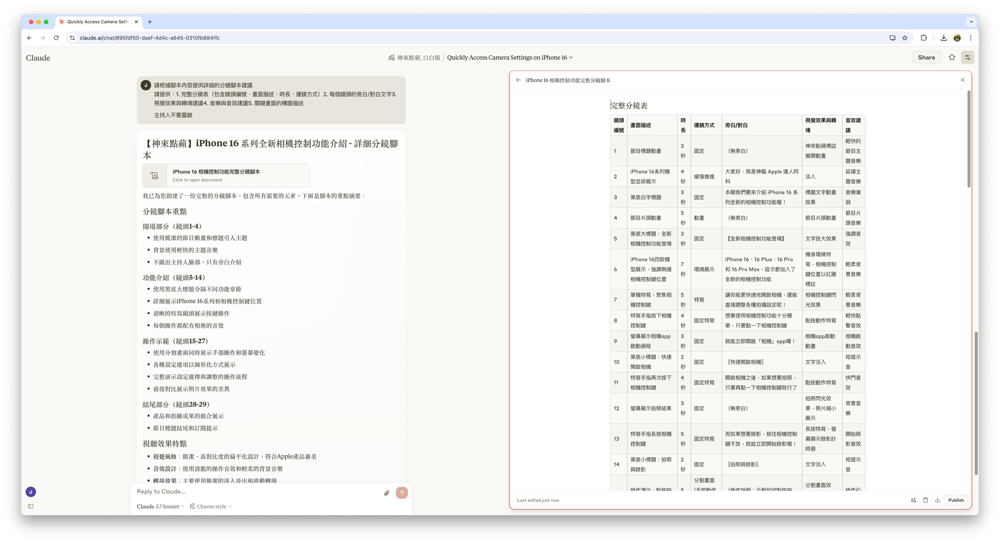

各行銷職能 AI 應用範例
按照不同職能與工作內容，示範 AI 的使用範例
不同行銷職能對 AI 的需求和應用方式會有所不相同。
本章節將依據不同的部門職能，提供基礎 AI 應用方案與技巧範例，各位可根據當下需求迭代變更下列提示詞，
或重試、開啟新對話讓 AI 提供不一樣的結果，希望可以為各位在日常工作應用時有所啟發。
部分範例為我自行根據印象中的部門職能所設計，若有與實際情況有所出入，請見諒。
一般職員通用應用
適用於所有職能的通用 AI 應用場景，包括會議記錄、簡報排版的視覺建議、翻譯等日常工作。
會議記錄：運用逐字稿
利用 AI 工具（如 Whisper + ChatGPT）整理會議內容，提取重點，生成結構化的會議記錄。
提示詞範例
以下是一段會議內容的轉錄稿，請幫我整理成結構化的會議記錄，包含：1. 會議主題 2. 討論要點 3. 決議事項 4. 後續行動項目。內容如下：[將會議內容在此貼上]（或上傳檔案附件）
[示意圖]
會議記錄：NotebookLM
使用 NotebookLM 整理會議內容，提取重點，生成結構化的會議記錄。
提示詞範例
以下是一段會議內容的轉錄稿，請幫我整理成結構化的會議記錄，包含：1. 會議主題 2. 討論要點 3. 決議事項 4. 後續行動項目。內容如下：[將會議內容在此貼上]（或上傳檔案附件）
[示意圖]
簡報排版的視覺建議
透過 Claude 獲得簡報設計與排版的建議，提升簡報的專業性與視覺吸引力。
如果你有網頁開發經驗，也可以試著在提示詞中加入 HTML、CSS、TailwindCSS、React 等前端的名詞，讓 AI 生成視覺建議。
甚至還能使用一些美學風格的名詞來嘗試喔！
提示詞範例
- 目標業績與實際業績比較
- 本次行銷活動的消費者輪廓（性別年齡與前次消費商品、是新會員還是舊會員
- 行銷素材的成效展示，包含素材樣張與成效數字
- 原廠素材成效與自製素材成效比較
我要在 PowerPoint 中製作行銷活動的結案簡報，報告中需要以下內容，
請用視覺化的方式給我排版建議
一次生成一頁，簡報比例是 16:9
[示意圖]
使用技巧
- 如果電腦跑不動 Whisper，無法生成逐字稿，可以將錄音檔提供給 NotebookLM 來摘要
- 對於簡報建議，明確指出簡報的目的、目標受眾和希望傳達的核心訊息，搭配美學風格名詞還可能會有意外之喜
- AI 服務的翻譯品質已經越來越好，但如果要翻譯成繁體中文對外使用的話，務必注意 AI 是否有正確使用台灣用語
數位設計課
接收需求設計電商使用的活動視覺等設計物，也負責公司吉祥物的 LINE 貼圖製作、形象經營。
圖像生成輔助溝通
使用 AI 圖像生成工具快速產出概念草圖，用於加快內部討論速度。
提示詞範例
為一個[季節/節日]促銷活動生成電商橫幅設計概念，主題是[產品類型]。設計風格應該是[風格描述]，使用[顏色]作為主色調。包含以下視覺元素：[列出元素]。
[示意圖]
軟體技能教學
獲取設計軟體的使用技巧、快捷鍵、功能解析等學習資源。
提示詞範例
請詳細解釋如何在[軟體名稱]中使用[特定效果或功能]。包括：所需的工具、步驟詳解、常見問題與解決方案，以及 3-5 個可以提高效率的專業技巧或快捷鍵。
[示意圖]
吉祥物經營的設計概念驗證
利用 AI 快速生成吉祥物在不同場景、情境下的視覺表現，驗證設計概念的適應性與延展性。
可以使用 Google AI Studio 中的 Gemini 2.0 Flash (Image Generation) Experimental 模型，
或是使用 VRAM 較大的顯卡，用 fluxgym 等工具自行訓練角色 LoRA。
提示詞範例
假設有一個名為[名稱]的公司吉祥物，它是一個[外觀描述]。請為這個吉祥物構思 5 個不同情緒/場景的 LINE 貼圖概念，每個概念包括表情、肢體動作和可能的背景元素。情緒/場景包括：開心、驚訝、困惑、工作中、慶祝節日。
[示意圖]
使用技巧
- 在使用 AI 生成視覺概念時，提供詳細需求和參考圖片可有效地提高生成結果的相關性
- 將 AI 生成的結果視為靈感來源與起點，而非最終成品，結合專業設計知識進行後續製作
會員經營處
主要應用場景
- 會員電子報內容與標題的改善建議
- 會員數據分析與細分策略
- 個人化促銷與優惠方案設計
- 會員忠誠度計劃開發
- 會員流失預防與挽留策略
AI 帶來的價值
- 提供會員溝通內容建議
- 協助發想會員分群與行銷策略
- 協助分析會員行為趨勢以調整策略
實用提示詞
◉ 個人化會員電子報生成器
請幫我為神腦國際的會員電子報撰寫一封針對 [會員群體] 的個人化郵件。郵件訊息應包含以下要素：
郵件主旨：能引起開啟興趣的主旨行
郵件開頭：個人化問候語，包括提及 [最近活動/季節/相關事件]
主要內容：
1. 介紹與該會員群體高度相關的 [產品種類] 新品或促銷
2. 與該會員群體興趣相符的專屬優惠（如：[描述優惠內容]）
3. 基於此會員群體過往購買行為的產品推薦（如：[描述特點]）
4. 會員專屬服務或活動訊息（如：[描述活動]）
結尾：包含清晰的行動呼籲和連結說明
PS：可考慮加入吸引人的元素，如限時優惠或會員獨家權益
會員群體特徵：[描述該群體的年齡、消費偏好、購買頻率等]
最近購買紀錄：[相關產品類別]
忠誠度狀態：[如：新會員/長期會員/高價值會員]
◉ 會員流失預防策略生成器
根據以下會員流失風險分析結果，請幫我制定一套針對性的會員挽留策略：
流失風險等級：[高/中/低]
會員分群：[分群描述，如：高消費但近期活躍度降低]
最後一次購買：[時間]
主要購買品類：[產品類別]
互動情況：[電子報開啟率、點擊率等]
請提供：
1. 可能的流失原因分析（至少3點）
2. 挽留策略建議，包括：
a. 溝通訊息和語調建議
b. 個人化優惠或激勵方案
c. 接觸時機和頻率
d. 跨管道協調策略
3. 成功挽留後的會員維繫計劃
4. 策略實施時間表與KPI設定
使用技巧與注意事項
- ◉ 移除機敏：若要使用雲端 AI 服務，記得移除或調整機敏資訊後再詢問。
行銷宣傳處
主要應用場景
- 社群媒體內容規劃與撰寫
- 市場趨勢分析與洞察
- 廣告文案撰寫與優化
- 行銷策略制定與評估
AI 帶來的價值
- 協助產出廣告文案初稿
- 提供多元點子，避免想法局限
- 協助分析競爭對手策略與市場定位
- 優化廣告文案，提高轉換率
實用提示詞
◉ 社群貼文產生器
我需要為神腦國際的 [產品名稱] 建立一系列社群貼文。請生成 3 則針對不同平台的貼文：
1. 一則 Instagram 貼文，包括吸引人的標題、正文內容（不超過 200 字）和 5 個相關標籤
2. 一則 Facebook 貼文，包括引人注目的開場問句、產品賣點說明和清晰的行動呼籲
3. 一則 LINE 推播訊息，簡短有力不超過 80 字，包含促銷資訊和獨特賣點
貼文應突顯以下賣點：[列出 3-5 個產品主要特點]
目標受眾是：[描述目標客群]
當前促銷活動：[如果有的話]
◉ 行銷活動企劃助手
請協助我規劃一個完整的行銷活動企劃，主題是：[活動主題]。
請包含以下部分：
1. 活動概念與宗旨（核心理念和目標）
2. 目標受眾分析
3. 行銷管道策略（至少 4 個管道的具體執行方式）
4. 關鍵訊息與傳播重點
5. 時程規劃（前期、中期、後期）
6. KPI 設定與評估方式
7. 資源需求與預算分配建議
行銷活動背景：[提供相關背景資訊]
預算範圍：[提供大致預算]
活動期間：[提供時間範圍]
使用技巧與注意事項
- ◉ 提供充分情境：在提示詞中清楚描述目標受眾、傳播管道和產品特色，以獲得更符合需求的結果。
- ◉ 迭代改善：根據 AI 生成的初步方案，提供具體意見並要求調整，以取得更好的效果。
- ◉ 參考競品：可以使用 Google Gemini 等具備搜度搜尋功能的服務，來收集並協助分析競品的行銷策略優缺點，並根據分析結果提出差異化的方案。
平面設計課
主要應用場景
- 廣告與宣傳素材的創意發想
- 設計簡報與提案生成
- 設計靈感參考與視覺風格建議
- 版面配置與排版建議
- 色彩方案與排版規劃
AI 帶來的價值
- 激發多元設計概念與創意方向
- 改善設計工作流程與效率
實用提示詞
◉ 設計創意指導
請幫我構思 [特定設計項目] 的創意概念和視覺方向。項目細節如下：
目標受眾：[描述目標客群]
設計用途：[例如：DM、海報、產品型錄等]
主要訊息：[需要傳達的核心信息]
品牌限制：需符合神腦國際企業識別系統，主色調為深藍色(Pantone 294C)與綠色(Pantone 390C)
請提供：
1. 3個可行的設計概念方向，每個包含核心理念和視覺表現手法
2. 每個概念的色彩建議與理由
3. 版面配置與主要元素的安排建議
4. 適合的字體選擇與排版方式
5. 可參考的設計案例或風格
[示意圖]
使用技巧與注意事項
- ◉ 生成視覺：可以使用具有視覺生成功能的 AI 來協助製作示意圖，幫助啟發想法。
- ◉ 專業詞彙：搭配使用設計專業術語（如：色相、飽和度、對比度、留白等）能獲得更詳細的建議。
- ◉ 細節描述：越詳細描述需求（如尺寸、材質、使用場景等），獲得的建議就越實用。
內容製播課
主要應用場景
- 圖像與影像生成輔助溝通
- 將企劃的拍攝腳本向 LLM 尋求分鏡靈感
- 影音製作軟體學習與資源尋找
- 內容創意與策略規劃
AI 帶來的價值
- 快速生成視覺概念，提升溝通效率
- 獲取多元化的腳本與分鏡建議
- 加速影音製作軟體的學習曲線
- 提高整體內容製作品質與效率
- 提供內容創意與策略規劃建議
實用提示詞
◉ 分鏡腳本建議
請為以下影片內容提供詳細的分鏡腳本建議：
影片主題：[描述主題，如：產品教學/品牌故事/活動紀錄]
時長：[預計影片長度，例如 30 秒、2 分鐘等]
目標：[影片目標，如：展示產品功能/提高品牌認知/教育用戶]
風格：[描述風格，如：專業/輕鬆/創意/情感]
可用素材：[描述已有的素材，如：產品照片/Logo/場地]
請提供：
1. 完整分鏡表（包含鏡頭編號、畫面描述、時長、運鏡方式）
2. 每個鏡頭的旁白/對白文字
3. 視覺效果與轉場建議
4. 音樂與音效建議
5. 關鍵畫面的構圖描述
[示意圖]
◉ 影音製作軟體學習計劃製作
我需要學習一個新的影音製作軟體 [軟體名稱]，請幫我：
1. 提供最適合初學者的學習資源（包括官方教學、推薦課程、YouTube 頻道、教學網站）
2. 設計一個從零開始的學習路徑，分為基礎、進階和專業三個階段
3. 列出該軟體最常用的 5-10 個核心功能及其用途
4. 提供 3 個適合初學者的實作練習案例
5. 分享提高學習效率的技巧和常見陷阱
軟體類型：[影片剪輯/動畫製作/特效處理/音效編輯等]
學習目的：[工作需求/個人興趣/特定專案]
可投入時間：[每週可學習時間]
先備知識：[已掌握的相關軟體或技能]
學習風格偏好：[視覺學習/實作練習/系統理論]
[示意圖]
使用技巧與注意事項
- ◉ 詳細描述視覺需求：在生成圖像或影像時，提供越詳細的描述（包括構圖、色彩、風格），結果就越符合期望。
- ◉ 分鏡腳本迭代：可使用企劃提供的口白腳本，再針對特定場景或鏡頭與 AI 還有企劃進行三方討論。
- ◉ 軟體學習資源篩選：向 AI 詢問特定影音軟體的學習資源時，可指明學習目標，讓 AI 能提供更有針對性的建議。
- ◉ 結合實際案例：在所有內容製作中，融入實際工作場景和案例，提高內容的實用性和相關性。
- ◉ 跨部門協作：內容製播課的 AI 應用可以與其他職能部門協作，例如行銷宣傳處的影片內容製作。
內容企劃課
主要應用場景
- 內容主題研究與資料搜集
- 初稿腳本快速生成
- 內容成效分析與調整
AI 帶來的價值
- 快速生成多元內容創意與主題
- 搜尋內容趨勢與使用者偏好
- 調整內容結構和架構規劃
使用技巧與注意事項
- ◉ 搜集題材資料：透過具深度研究、深度搜尋功能的 AI，收集相關題材資料。
- ◉ 建立內容主題庫：將內容庫提供給 Claude、ChatGPT 等 AI 來設定專案，作為參考資料
- ◉ 競品分析：要求 AI 分析競爭對手的內容策略優勢，從中汲取靈感並找出差異化機會。
AI 應用的關鍵建議
無論屬於哪個職能部門，在運用 AI 工具時，都可以參考以下建議來獲得更好的效果：
提供明確的指示
具體說明需求、目的，避免過於模糊的描述。甚至能提供風格說明或範例來取得更準確的效果
迭代調整
將 AI 生成的結果視為起點，通過回饋和修改不斷改善，直到達到理想效果。
結合專業知識
AI 是工具而非替代品，最好的結果來自於將 AI 的能力與你的專業知識和決策相結合。
尋求第二意見
可使用多種不同 AI 服務來找出多種方案，再進行比較和選擇。
定期學習和更新
AI 工具持續發展，定期了解新功能和技巧可以不斷提升您的應用水平。
創意引導
使用 AI 探索不同的創意方向，擴展思路，而非僅限於常規思維模式。